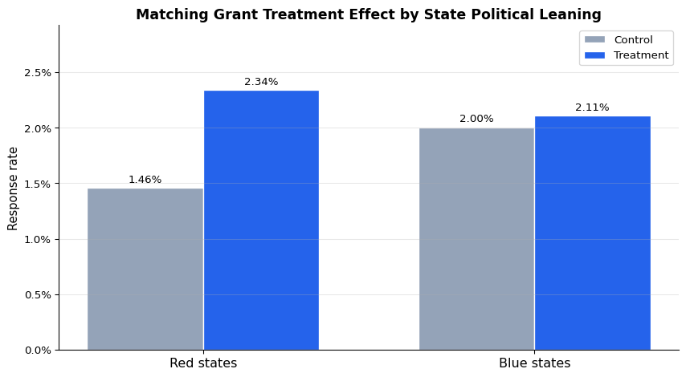

import pandas as pd
import numpy as np
df = pd.read_stata("karlan_list_data.dta")
print(f"Observations: {len(df):,}")
print(f"Variables: {df.shape[1]}")Observations: 50,130
Variables: 35Does Price Matter in Charitable Giving?
Aidan Teeger
April 22, 2026
In 2007, Dean Karlan and John A. List published one of the most influential field experiments in the economics of charitable giving. The paper, “Does Price Matter in Charitable Giving? Evidence from a Large-Scale Natural Field Experiment,” was published in the American Economic Review and set out to answer a practical question that fundraisers had been debating for decades. When you offer a matching grant on a donation, does it actually bring in more money? And if so, does a bigger match ratio work even better?
The setup was ambitious. Karlan and List partnered with a liberal political nonprofit in the United States and sent direct-mail fundraising letters to over 50,000 prior donors. Each recipient was randomly assigned to either a control group, which received a standard solicitation letter, or a treatment group, which received a letter announcing that a concerned fellow member had offered to match their donation. Within the treatment group, the authors further randomized three features of the match offer. First, the match ratio itself, which varied between $1:$1, $2:$1, and $3:$1. Second, the maximum total size of the matching grant, set at $25,000, $50,000, $100,000, or left unstated. Third, the suggested donation amount highlighted on the reply card, which was either the donor’s highest prior gift, 1.25 times that amount, or 1.5 times that amount.
The main findings are the reason this paper is so widely cited. Announcing the availability of a match raised revenue per solicitation by 19 percent and raised the probability of donating by 22 percent, both statistically significant. But the larger match ratios ($2:$1 and $3:$1) produced no additional lift over the smaller $1:$1 ratio. That directly contradicts conventional fundraising wisdom, which holds that bigger matches are always better. The paper also surfaces a striking piece of heterogeneity, which is that the matching treatment works strongly in states that voted for George W. Bush in the 2004 election but has essentially no effect in states that voted for John Kerry.
In this post I replicate the central results of the paper using the publicly available replication data, and then produce one additional visualization that brings the red-state/blue-state finding to life.
The replication dataset is distributed as a Stata file (.dta) on openICPSR. I load it with pandas and take a quick look at the structure.
import pandas as pd
import numpy as np
df = pd.read_stata("karlan_list_data.dta")
print(f"Observations: {len(df):,}")
print(f"Variables: {df.shape[1]}")Observations: 50,130
Variables: 35The data has one row per solicited donor, with indicator variables for which treatment arm they were assigned to, a binary outcome for whether they donated, the dollar amount donated, and a set of pre-treatment characteristics that we can use to check the randomization.
Before we analyze the treatment effects, we want to confirm that the randomization worked. If treatment assignment was truly random, then pre-treatment characteristics should look the same, on average, across the treatment and control groups. Any small differences we see should be statistically indistinguishable from zero.
I check balance on four representative pre-treatment variables. For each variable I run a simple t-test of treatment versus control, which is also numerically equivalent to a regression of the variable on the treatment indicator (with heteroskedasticity-robust standard errors).
from scipy import stats
import statsmodels.formula.api as smf
balance_vars = {
"MRM2": "Months since last donation",
"HPA": "Highest previous contribution",
"freq": "Number of prior donations",
"years": "Years since initial donation",
}
rows = []
for var, label in balance_vars.items():
treat = df.loc[df["treatment"] == 1, var].dropna()
ctrl = df.loc[df["control"] == 1, var].dropna()
t_stat, p_val = stats.ttest_ind(treat, ctrl, equal_var=False)
reg = smf.ols(f"{var} ~ treatment", data=df).fit(cov_type="HC1")
rows.append({
"Variable": label,
"Control mean": f"{ctrl.mean():.3f}",
"Treatment mean": f"{treat.mean():.3f}",
"Difference": f"{treat.mean() - ctrl.mean():+.3f}",
"t-stat": f"{t_stat:.2f}",
"p-value": f"{p_val:.3f}",
"Reg. p-value": f"{reg.pvalues['treatment']:.3f}",
})
balance_table = pd.DataFrame(rows)
balance_table| Variable | Control mean | Treatment mean | Difference | t-stat | p-value | Reg. p-value | |
|---|---|---|---|---|---|---|---|
| 0 | Months since last donation | 12.998 | 13.012 | +0.014 | 0.12 | 0.905 | 0.905 |
| 1 | Highest previous contribution | 58.960 | 59.597 | +0.637 | 0.97 | 0.332 | 0.332 |
| 2 | Number of prior donations | 8.047 | 8.035 | -0.012 | -0.11 | 0.912 | 0.912 |
| 3 | Years since initial donation | 6.136 | 6.078 | -0.058 | -1.09 | 0.275 | 0.275 |
None of the four variables show a statistically significant difference at the 5 percent level. The p-values from the t-test and the p-values from the regression coefficient on treatment agree almost exactly, as they should, because a two-sample t-test with unequal variances is the same inference you get from an OLS regression with robust standard errors. This is essentially what Table 1 of the paper shows across a much longer list of variables, and it is why we can trust that any differences we see in the outcome variables are genuinely caused by the treatment rather than by pre-existing differences between the groups.
Now for the headline result. I compute the response rate (fraction of donors who gave anything), the unconditional dollars given (averaged over everyone, including those who did not give), and the conditional dollars given (averaged only over those who actually donated). I do this for the control group, for the pooled treatment group, and then separately for the three match ratios.
def summarize(sub):
n = len(sub)
resp = sub["gave"].mean()
unconditional = sub["amount"].mean()
conditional = sub.loc[sub["gave"] == 1, "amount"].mean()
return pd.Series({
"N": f"{n:,}",
"Response rate": f"{resp:.4f}",
"$ given (uncond.)": f"{unconditional:.3f}",
"$ given (cond.)": f"{conditional:.2f}",
})
treat = df[df["treatment"] == 1]
groups = {
"Control": df[df["control"] == 1],
"Treatment": treat,
"1:1 match": treat[(treat["ratio2"] == 0) & (treat["ratio3"] == 0)],
"2:1 match": treat[treat["ratio2"] == 1],
"3:1 match": treat[treat["ratio3"] == 1],
}
table_2a = pd.DataFrame({label: summarize(g) for label, g in groups.items()}).T
table_2a| N | Response rate | $ given (uncond.) | $ given (cond.) | |
|---|---|---|---|---|
| Control | 16,687 | 0.0179 | 0.813 | 45.54 |
| Treatment | 33,396 | 0.0220 | 0.967 | 43.87 |
| 1:1 match | 11,133 | 0.0207 | 0.937 | 45.14 |
| 2:1 match | 11,134 | 0.0226 | 1.026 | 45.34 |
| 3:1 match | 11,129 | 0.0227 | 0.938 | 41.25 |
These numbers line up with Table 2A Panel A of the paper. The response rate rises from 1.8 percent in the control group to 2.2 percent in the pooled treatment group, a 22 percent relative increase. Unconditional dollars raised per letter rise from 81 cents to 97 cents, a 19 percent increase. Both of these differences are statistically meaningful given the sample size of over 50,000. But when I break the treatment group into the three match ratios, the response rate barely moves (2.1, 2.3, 2.3 percent for 1:1, 2:1, 3:1) and the unconditional dollars raised are effectively flat (94 cents, $1.03, 94 cents). This is the paper’s most counter-intuitive finding. A bigger match ratio does not bring in more money. The mere presence of a match is what drives the effect.
To formalize the finding on the response rate, I estimate a regression of the binary outcome gave on the treatment indicator. The paper labels Table 3 as a probit regression, but the coefficients look suspiciously linear, which is a quirk noted in the assignment prompt. I fit both and compare.
import statsmodels.api as sm
ols_fit = smf.ols("gave ~ treatment", data=df).fit(cov_type="HC1")
probit_df = df[["gave", "treatment"]].dropna().astype(float)
X = sm.add_constant(probit_df["treatment"])
y = probit_df["gave"]
probit_fit = sm.Probit(y, X).fit(disp=False)
me = probit_fit.get_margeff(at="overall")
results = pd.DataFrame({
"OLS (LPM) coef.": [f"{ols_fit.params['Intercept']:.4f}",
f"{ols_fit.params['treatment']:.4f}"],
"OLS std. error": [f"{ols_fit.bse['Intercept']:.4f}",
f"{ols_fit.bse['treatment']:.4f}"],
"OLS p-value": [f"{ols_fit.pvalues['Intercept']:.4f}",
f"{ols_fit.pvalues['treatment']:.4f}"],
"Probit coef.": [f"{probit_fit.params['const']:.4f}",
f"{probit_fit.params['treatment']:.4f}"],
"Probit marg. effect": ["", f"{me.margeff[0]:.4f}"],
}, index=["Intercept", "Treatment"])
results| OLS (LPM) coef. | OLS std. error | OLS p-value | Probit coef. | Probit marg. effect | |
|---|---|---|---|---|---|
| Intercept | 0.0179 | 0.0010 | 0.0000 | -2.1001 | |
| Treatment | 0.0042 | 0.0013 | 0.0013 | 0.0868 | 0.0043 |
The OLS (linear probability model) coefficient on treatment is about 0.004, meaning the match offer raises the probability of donating by roughly 0.4 percentage points in absolute terms. That matches column 1 of Table 3 in the paper exactly. The probit model, once you convert its coefficient into an average marginal effect, gives the same answer to the fourth decimal place. This confirms the assignment’s hint that the numbers in Table 3 look like linear probability model coefficients even though the table header says probit. In practical terms, with an outcome variable this close to zero (only about 2 percent of people donate), the linear and probit specifications produce virtually identical results.
The finding from the paper that stuck with me is the spatial heterogeneity. The matching treatment works well in red states and fails in blue states, even though both were randomized the same way and received identical letters. To make this concrete, I replicate the comparison and then visualize it in a way the paper only shows as numbers in Table 2 panels B and C.
red = df[df["red0"] == 1]
blue = df[df["red0"] == 0]
def red_blue_row(sub, label):
ctrl_rate = sub.loc[sub["control"] == 1, "gave"].mean()
treat_rate = sub.loc[sub["treatment"] == 1, "gave"].mean()
lift = treat_rate - ctrl_rate
return {
"Region": label,
"Control response rate": f"{ctrl_rate:.4f}",
"Treatment response rate": f"{treat_rate:.4f}",
"Difference (p.p.)": f"{(lift * 100):+.2f}",
"Relative lift": f"{(lift / ctrl_rate * 100):+.1f}%",
}
rb_table = pd.DataFrame([
red_blue_row(red, "Red states"),
red_blue_row(blue, "Blue states"),
])
rb_table| Region | Control response rate | Treatment response rate | Difference (p.p.) | Relative lift | |
|---|---|---|---|---|---|
| 0 | Red states | 0.0146 | 0.0234 | +0.88 | +60.3% |
| 1 | Blue states | 0.0200 | 0.0211 | +0.10 | +5.2% |
In red states, the response rate goes from 1.5 percent in the control group to 2.3 percent in the treatment group, a relative lift of more than 50 percent. In blue states, it goes from 2.0 percent to 2.1 percent, essentially no change. The matching treatment is basically free money for the charity in one half of the country and a wash in the other.
Rather than stop at the table, let me show this visually with a plot that makes the contrast pop.

The visual makes the story immediate. Blue states donate at a slightly higher baseline rate than red states (the two grey bars), which fits intuition given that the charity is politically liberal. But the treatment effect, which is the height difference between the grey and blue bars within each region, is dramatically larger in red states than in blue states. The blue-state treatment bar is barely taller than its control counterpart. The red-state treatment bar towers over its control.
Why might this be? Karlan and List suggest several possible explanations, none of which they can definitively pin down with this data alone. It may be that donors in red states, being in the political minority in this donor pool, have a stronger latent sense of social identity with the charity and respond more strongly to signals that other members are supporting the organization. It may be that the matching grant acts as a credibility signal, and that donors in more hostile political environments value that signal more highly. Whatever the mechanism, the practical implication is striking. A fundraising tactic that works well on one subset of a donor base can be nearly useless on another, and the usual rules of thumb about match ratios and donation amounts mask enormous heterogeneity underneath. Any charity running a matching campaign today should be doing this kind of subgroup analysis by default, rather than reporting one average treatment effect and calling it a day.